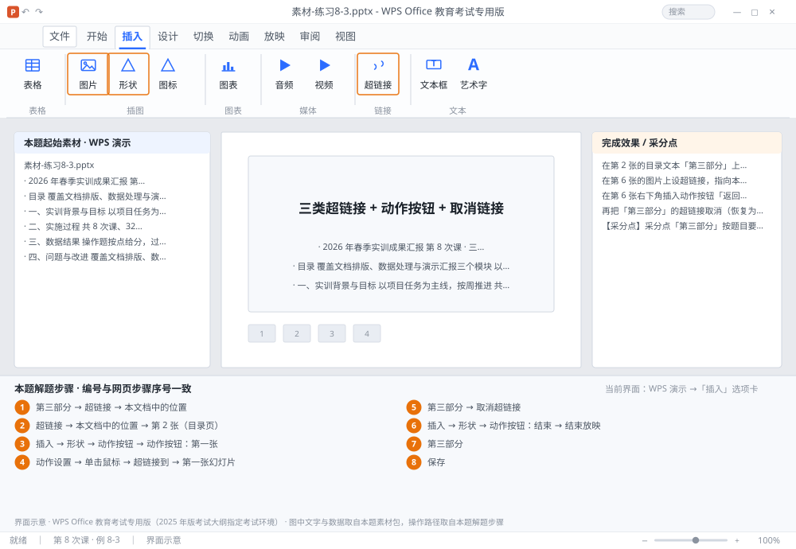

完成比对文档 · 例 8-3
三类超链接 + 动作按钮 + 取消链接 ｜ 第 8 次课 / WPS 演示 ｜ 网页：实操-演示2.html ｜ 考试环境：WPS Office 教育考试专用版（2025 年版考试大纲指定考试环境）
用途 本页按修订后的题目要求与解题步骤生成，是交卷自查的结果基准：
逐项列出每一步应出现的可复核结果，配合模拟操作截图与解题结果文件使用。
它不是素材包的一部分，不会预置答案动作；起始素材仍从本题素材包下载。
一、本题起始素材包
目录：练习素材/练习8-3-超链接与动作/ ｜
下载包：练习素材/下载/练习8-3-超链接与动作.zip
二、题目要求
- 在第 2 张的目录文本「第三部分」上设超链接，指向本文档第 5 张。
- 在第 6 张的图片上设超链接，指向本文档 第 2 张（目录页）。
- 在第 6 张右下角插入动作按钮「返回第一张」，单击时跳回第 1 张。
- 再把「第三部分」的超链接取消（恢复为普通文本）。
- 在第 8 张插入动作按钮「结束放映」。
- 保存为 学号-姓名-练习8-3.pptx。
三、解题步骤（编号与下方核对表、截图编号一致）
- 文本超链接。选中「第三部分」几个字（只选文字）→ 右键 →「超链接」→ 左侧选「本文档中的位置」→ 在列表里选第 5 张 → 确定。链接后文字变蓝并加下划线。
- 图片超链接。选中第 6 张的图片 → 右键 →「超链接」→ 左侧选「本文档中的位置」→ 选「第 2 张（目录页）」→ 确定。
- 动作按钮。「插入」→「形状」→ 最下方「动作按钮」分类 → 选「动作按钮：第一张」→ 在右下角拖出一个小方块。
- 设行为。松开鼠标自动弹出「动作设置」→ 选「单击鼠标」→「超链接到」→「第一张幻灯片」→ 确定。若弹窗被关掉，右键按钮 →「动作设置」可重新打开。
- 取消链接。选中「第三部分」→ 右键 →「取消超链接」。文字颜色通常不会自动恢复，需手动改回原色。
- 结束按钮。第 8 张 →「插入」→「形状」→「动作按钮：结束」→ 拖出 → 行为选「结束放映」。
- 验证。按 F5 放映 → 在第 6 张点图片应跳到第 2 张（目录页）；点第 6 张动作按钮应回第 1 张；点第 8 张结束按钮可结束放映；「第三部分」已不再跳转（链接已取消）。
- 保存。Ctrl+S。
四、完成效果 / 采分点
采分点「第三部分」按题目要求完成第 5 张超链接设置后已取消、最终恢复为普通文本 · 第 6 张图片链接指向本文档第 2 张（目录页） · 第 6 张有「第一张」动作按钮且单击生效 · 第 8 张有「结束放映」动作按钮
五、逐项完成核对表
| 步骤 | 关键操作路径 | 应出现的结果（可复核） |
|---|
| 1 | 文本超链接 | 「第三部分」、「超链接」、「本文档中的位置」、5 张 |
| 2 | 图片超链接 | 6 张、「超链接」、「本文档中的位置」、「第 2 张（目录页）」 |
| 3 | 动作按钮 | 「插入」、「形状」、「动作按钮」、「动作按钮：第一张」 |
| 4 | 设行为 | 「动作设置」、「单击鼠标」、「超链接到」、「第一张幻灯片」 |
| 5 | 取消链接 | 「第三部分」、「取消超链接」 |
| 6 | 结束按钮 | 8 张、「插入」、「形状」、「动作按钮：结束」、「结束放映」 |
| 7 | 验证 | F5、6 张、2 张、1 张、8 张 |
| 8 | 保存 | 保存 |
六、模拟操作截图

界面示意 · WPS Office 教育考试专用版 · 橙色编号与本题解题步骤序号一致；
图中文字与数据取自本题素材包，功能入口取自本题解题步骤。
核对方法：按网页解题步骤完成并另存自己的成稿后，逐行比对本表第 3 列的
参数、公式、区域、文件名与对象数量；再对照网页「完成效果 / 采分点」检查版式是否一致。